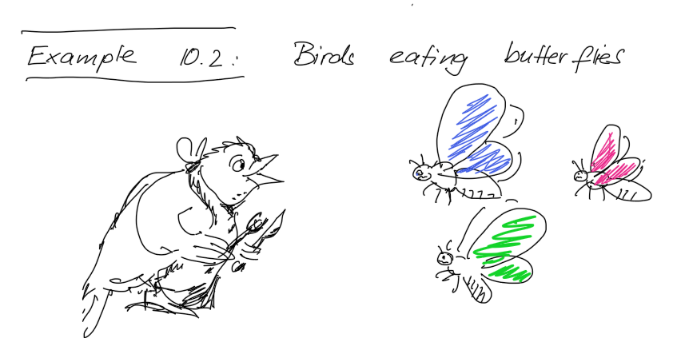
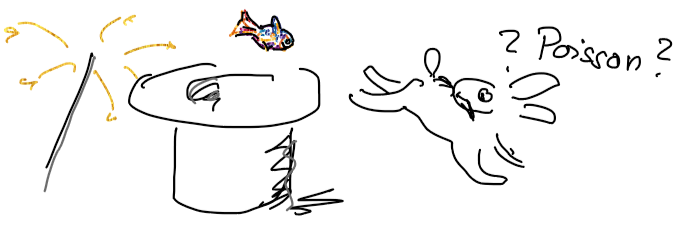

Analysis of the jacamar-eats-butterflies data as multinomial model using the Poisson trick
Preparing the data
Here we look at the bird-eats-butterflies data, where scientists have painted the wings of butterflies from different six species in various colours, and noted how many butterflies were eaten (E), sampled (S) or not touched (N).

First, we need to load the data. There is a problem with some combinations of species and colour simply not being observed - they have. We remove these, they have E+S=N = 0.
# If you have not installed the data to Davison's book, do this:# install.packages("SMPracticals")jacamar <- SMPracticals::jacamar # did not want to attach the whole packagehead(jacamar) # these are the data for Jacamar bird eating butterflies
species colour N S E
1 Ab Unpainted 0 0 14
2 Pa Unpainted 6 1 0
3 Di Unpainted 1 0 2
4 Pl Unpainted 4 1 5
5 Cf Unpainted 0 0 0
6 Ss Unpainted 0 0 1
# how many zero totals:totals <-with(jacamar, E + S + N)cat("In all",sum(totals ==0), "combinations are not observed")
In all 4 combinations are not observed
Jacamar <- jacamar[totals >0,] # keep only the combinations with at least 1 specimenhead(Jacamar)
species colour N S E
1 Ab Unpainted 0 0 14
2 Pa Unpainted 6 1 0
3 Di Unpainted 1 0 2
4 Pl Unpainted 4 1 5
6 Ss Unpainted 0 0 1
7 Ab Brown 7 1 2
cat("There remain", nrow(Jacamar),"combinations")
There remain 44 combinations
Reshape for the Poisson trick
For the Poisson trick to work, we need to reshape the data such that the fate becomes another variable (column in the dataframe). One way to use this is the package tidyr from “the tidyverse”, a group of packages that aim to make handling data easier. Famous ggplot2 is also part of the “tidyverse”. You can install the whole bunch with install.packages("tidyverse").
# reshape data, using the tidyversejacamarlong <- tidyr::pivot_longer(Jacamar,cols =c("E","S","N"),names_to ="fate",values_to ="count")# now a look at the data again:head(jacamarlong)
# A tibble: 6 × 4
species colour fate count
<fct> <fct> <chr> <dbl>
1 Ab Unpainted E 14
2 Ab Unpainted S 0
3 Ab Unpainted N 0
4 Pa Unpainted E 0
5 Pa Unpainted S 1
6 Pa Unpainted N 6
Now the data are ready to be analysed as a Poisson-glm, even though we model them as multinomial.
You know, the Poisson trick.

“Running” the models
We try to reconstruct Table 10.14 from Davison. The first line does not include the variable fate, which means that fate has no influence on the mean in cells with different fate. Expressed in terms of the multinomial model, the probability of being eaten is the same as the probability of being sampled or getting away without being touched, for all combinations of species and colour.
🤔 Does this make sense? Do all statistical analyses automatically make sense?
# model 1: all fates are equally likely, # counts only depend on the combination of species and colourmodel1 <-glm(count ~ species:colour, data = jacamarlong, family = poisson)# report results as in Table 10.14 in Davisonformula(model1)
count ~ species:colour
deviance(model1)
[1] 259.4247
df.residual(model1)
[1] 88
# make this into a functionreport <-function(model){c(Terms =formula(model), df =df.residual(model), Deviance =round(deviance(model), 2))}report(model1)
Here are the remaining models, and the final table
# model 2: there are different counts for Eaten, Not touched, Sampledmodel2 <-glm(count ~ species:colour + fate, data = jacamarlong, family = poisson)# model 3: fate depends on colourmodel3 <-glm(count ~ species:colour + fate:colour , data = jacamarlong, family = poisson)# model 4: depends on speciesmodel4 <-glm(count ~ species:colour + fate:species , data = jacamarlong, family = poisson)# model 5: fate count depends additively on species and colourmodel5 <-glm(count ~ species:colour + fate:species + fate:colour, data = jacamarlong, family = poisson)# full model: fate count depends additively on species and colour. Removed intercept heremodel6 <-glm(count ~ species:colour:fate, data = jacamarlong, family = poisson)# print reports as table by using rbindrbind(report(model1), report(model2), report(model3), report(model4), report(model5), report(model6))